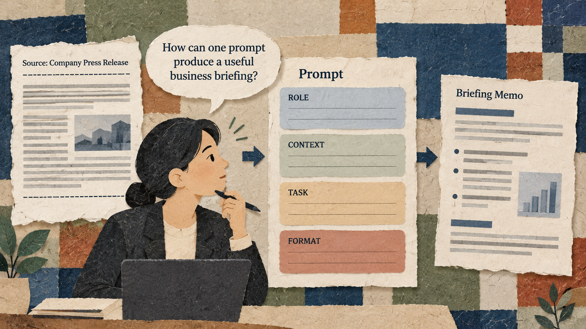

Situation
The problem
A vague request often produces a generic, poorly structured memo that takes repeated editing. The user needs a prompt that supplies the role, business context, task, and expected format.

3 Hours (180 minutes) - Hour 1 (50 min): Comprehensive Concept Lecture & Live Demonstration - Hour 2 (50 min): Guided Hands-On Lab (Basic Exercise: 4-Box Architecture Form) - Hour 3 (50 min): Applied Business Challenge & Peer Debrief (Advanced Exercise: Competitive Sales Battlecard)
A vague request often produces a generic, poorly structured memo that takes repeated editing. The user needs a prompt that supplies the role, business context, task, and expected format.
Master the 4-part prompt formula to consistently generate executive-ready business deliverables.
Practice material: Use the practice material supplied in the session Markdown.
Do not replace missing information with guesses.
A vague request often produces a generic, poorly structured memo that takes repeated editing. The user needs a prompt that supplies the role, business context, task, and expected format.
Key explanations taken from the active session lesson.
Key explanations taken from the active session lesson.
These examples come from the current session scenario.
Summarize this corporate press release for our internal staff memo.
Keep the source, task, constraints, and output check visible.
Role: Senior Product Marketing Director. Business Context: We are preparing an internal product briefing for our regional sales reps regarding our competitor's new enterprise cloud software announcement. Task Directive: Extract key competitive facts from the press release delimited below and organize them into an executive briefing memo. Input Press Release: ### [Paste PR Newswire text here] ### Output Format Template: - Executive Headline: [1 sentence] - Core Customer Problem Solved: [2 bullets] - Target Market & Pricing: [1-2 bullets] - Threat Level & Sales Counter-Arguments: [3 numbered bullets] Constraint: Do NOT include conversational pleasantries or introductory greetings.
Use the complete case and instructions from the session Markdown.
Use the complete case and instructions from the session Markdown.
Check the output before sharing or acting on it.